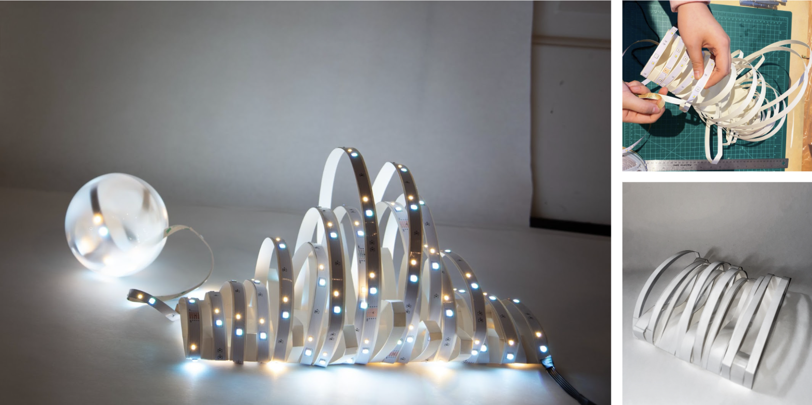
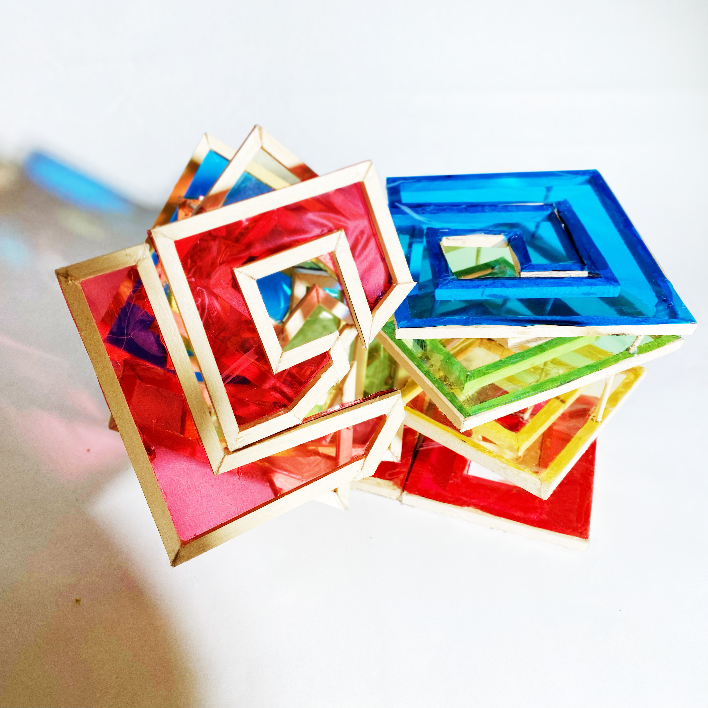
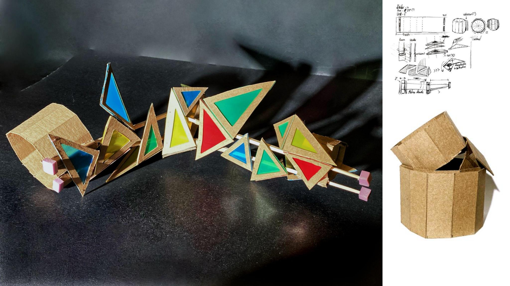
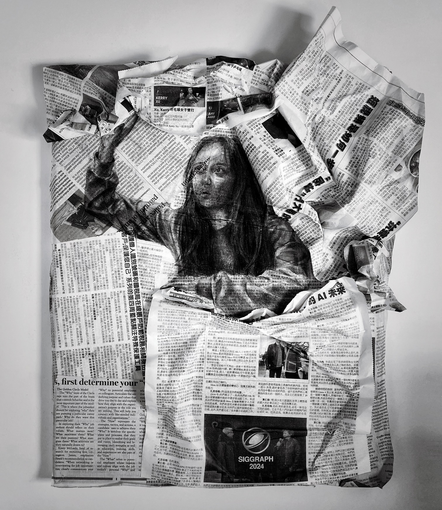
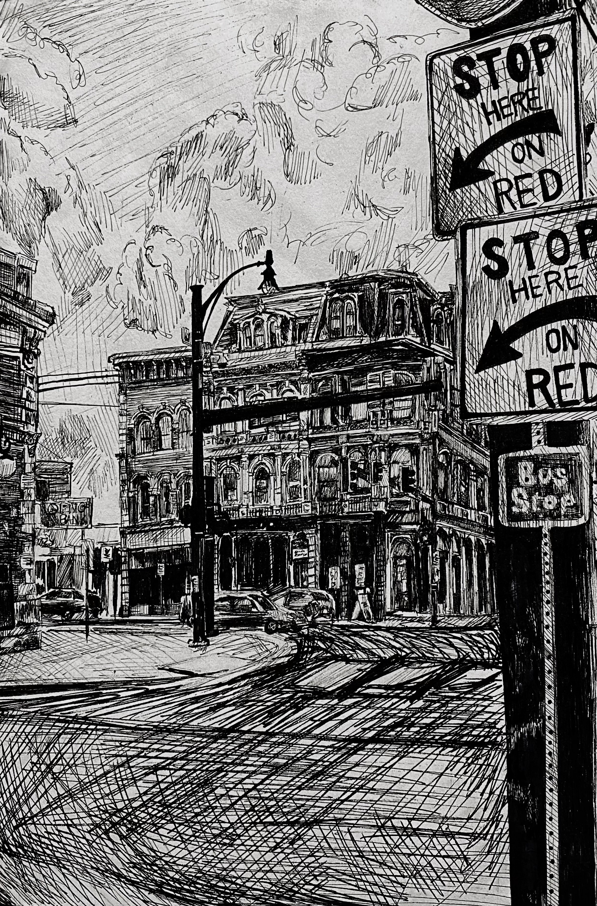
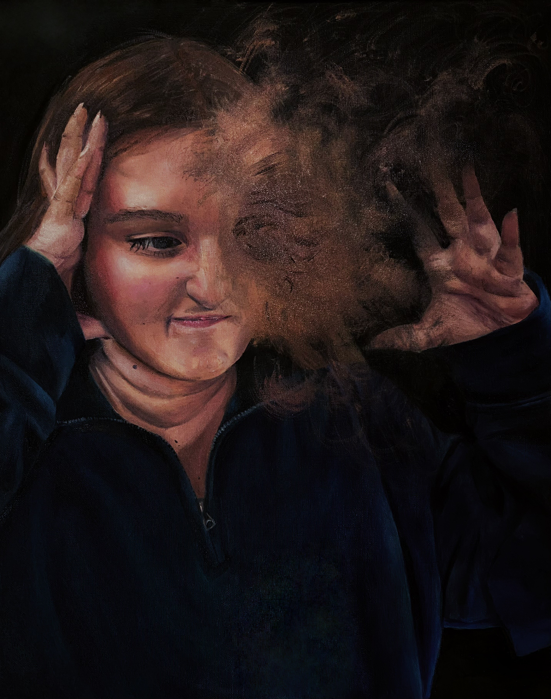
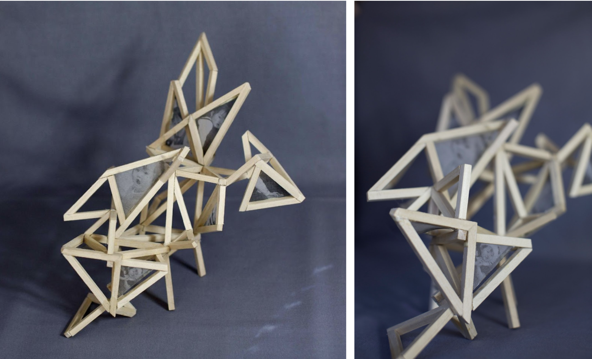
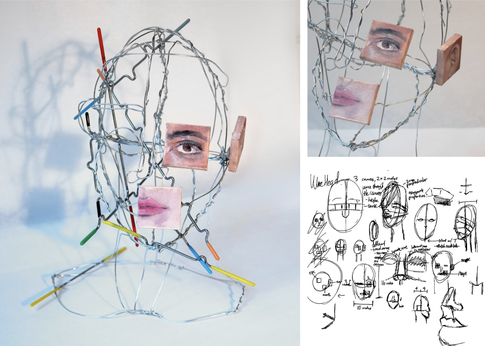

Cloud and Moon Nightlight
8.5 x 24 x 8”, poster board, LED light strips, gorilla glue, plastic spherical container, 2024
8.5 x 24 x 8”, poster board, LED light strips, gorilla glue, plastic spherical container, 2024

Overlap: Pattern to Volume
4 x 6 x 5”, wooden dowel, tacky glue, cellophane, 2024
4 x 6 x 5”, wooden dowel, tacky glue, cellophane, 2024

Dappled
5 x 20.5 x 5”, chipboard, foam, polypropylene plastic, square wooden dowels, gorilla glue, 2024
5 x 20.5 x 5”, chipboard, foam, polypropylene plastic, square wooden dowels, gorilla glue, 2024

Dui Le
22 x 17.5 x 3”, charcoal, newspaper, gorilla glue, hairspray, 2024
22 x 17.5 x 3”, charcoal, newspaper, gorilla glue, hairspray, 2024

Pittsburgh in the Summer
12 x 8”, pencil and India ink on paper, 2024
12 x 8”, pencil and India ink on paper, 2024

Reverie
20 x 16”, oil paint on canvas, 2024
20 x 16”, oil paint on canvas, 2024

Self Portrait
7 x 10 x 9.5”, square wooden dowel, gorilla glue, vellum paper, 2024
7 x 10 x 9.5”, square wooden dowel, gorilla glue, vellum paper, 2024

You Are a Mosaic of Everyone You’ve Ever Loved
14 x 11 x 7.5”, steel wire, sticky tack, oil on canvas 2024
14 x 11 x 7.5”, steel wire, sticky tack, oil on canvas 2024
Study of Connections
13 x 11 x 6”, basswood 2025
13 x 11 x 6”, basswood 2025